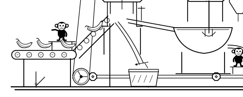
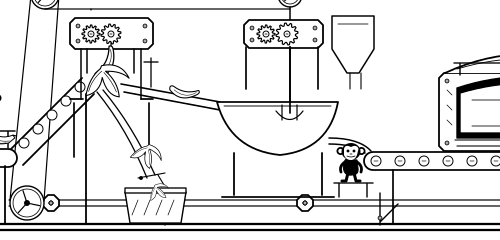
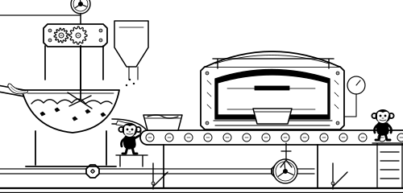
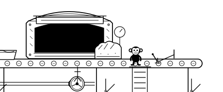
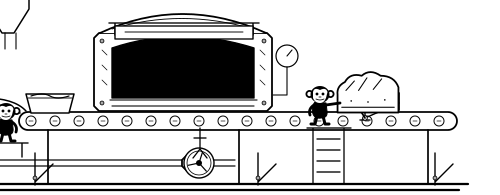
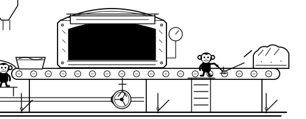

Whole bananas arrive
The rising feed carries intact fruit with stalks and distinct skins. A tiny worker checks the arrival.
A monochrome miniature world with shared drives, purposeful linkages and tiny monkey workers. The banana-to-bread process stays simple; its machinery now belongs to one family.
Static illustration review. Worker scale remains 4% of desktop scene width. No Stage 2 animation or homepage integration has begun.

These are working-detail crops, not six identical wide shots. The material, door, worker contact and gate state change between frames. The desktop drawing above and comparison page establish actual scene scale.

The rising feed carries intact fruit with stalks and distinct skins. A tiny worker checks the arrival.

The split peel fans away from the exposed core. Skins fall down a separate guided path; pale fruit travels along the elevated chute.

Coarse pieces sit under the visible beater. A smoother ribbon fills a tin as ingredients enter from the hopper.

The rack-lift door is raised. A domed, scored loaf is halfway out of the dark oven mouth.

The loaf waits against a closed stop. The monkey leans towards it from the raised platform; upstream equipment keeps operating.

The worker steps to press the lever. The linked stop lifts, and the loaf moves towards the exit.
The crop preserves the oven, loaf, shaft, conveyor and raised inspection station. There is one worker, with the same 40-unit character geometry: approximately 27px high at a 335px illustration width.
Keep touch controls outside the drawing. The native pause/play and approval behaviour remains a Stage 2 proposal.

The proposed 14-second cycle retains continuous belt and drive motion. The inspector holds the release for two seconds while the upstream process continues. The small reach then opens the linked stop. There is no game, alternative-route choice or expressive character routine.
See exactly which parts would move ↗Please assess the connected mechanical composition, the banana-to-bread transformation and the raised inspection scene. Previous versions are preserved for comparison. The homepage, components, assets and deployment settings are unchanged.
Compare at intended desktop and mobile sizes ↗